Retardos: manual de RH
Panel RH · Retardos, versión V1.05. Las capturas son del modo de ejemplo: los nombres son inventados. Los nombres de botones y pestañas son exactamente los que se ven en pantalla.
1. Entrar al panel
Se entra con la cuenta del Suite (la misma de Nómina · Incidencias). Escribe tu usuario y contraseña y oprime Entrar. Si la sesión vence, el panel te regresa a esta pantalla.
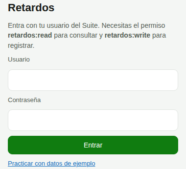
2. Los avisos de arriba
Arriba de todo, el panel dice en qué etapa estamos. Léelos antes de actuar:
- Piloto activo desde ...: las personas del piloto reciben avisos reales. Sus casos llevan la marca real · piloto.
- Modo sombra: fuera del piloto, ningún correo llega a los empleados. Se desvían a Dirección y RH con la etiqueta [SOMBRA].
- Conteo desde cero: desde qué fecha cuentan los retardos. Piloto desde el 08/10/2026, resto de la plantilla desde el 12/10/2026. Nada anterior suma.
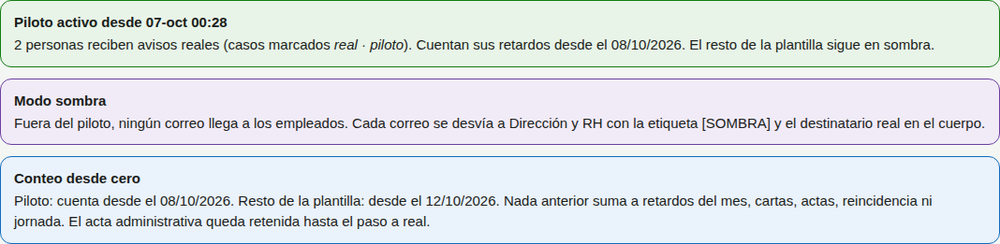
Abajo de los avisos están las pestañas: Casos Hojas por confirmar Reincidencia Jornada semanal Propuestas de medida Calidad de datos Configuración.
3. Firmas por recolectar
Es la primera cubeta de la pestaña Casos: Firmas por recolectar ("Imprimir, citar y subir la hoja. Por vencimiento"). Los casos salen ordenados por vencimiento: el de arriba es el más urgente.
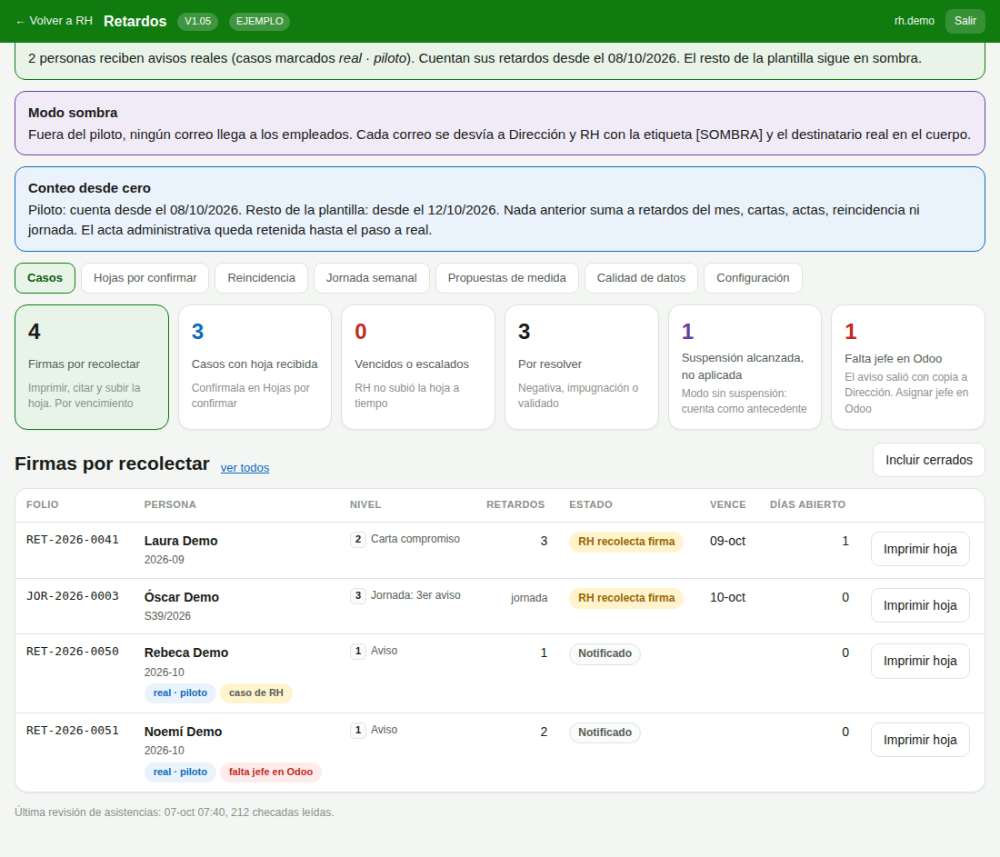
- Abre el caso (clic en el renglón). En el recuadro Qué sigue oprime Imprimir hoja. También puedes imprimirla desde la lista con el botón Imprimir hoja del renglón.
- Cita a la persona y recolecta su firma, la de RH y la del jefe.
- Sube la hoja firmada: Subir hoja recolectada, elige el archivo (PDF o foto, máximo 8 MB) y oprime Subir hoja.
- En unos minutos el lector la revisa y la hoja aparece en Hojas por confirmar (sección 5).
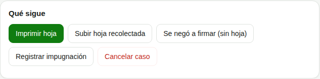
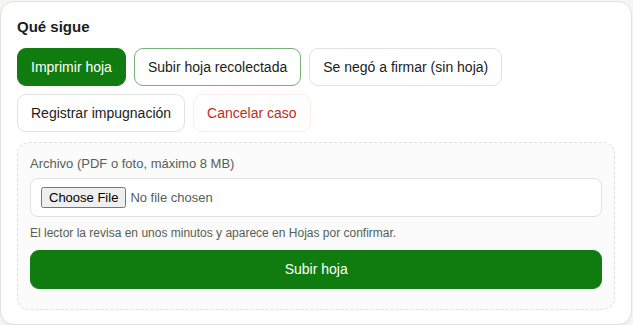
4. La persona se negó a firmar
En el caso, recuadro Qué sigue, oprime Se negó a firmar (sin hoja). Escribe los nombres de los dos testigos y oprime Registrar negativa. Después sube la constancia firmada por los testigos con Subir constancia de negativa.
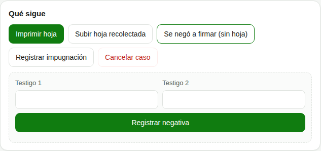
Si la persona no está de acuerdo con el caso, usa Registrar impugnación.
5. Hojas por confirmar: subir y decidir
Subir varias hojas a la vez
Pestaña Hojas por confirmar, recuadro Subir hojas: elige los archivos (máximo 10, de 8 MB cada uno) y oprime Subir. Pueden venir varias hojas en un mismo PDF: el lector las separa por el código QR.
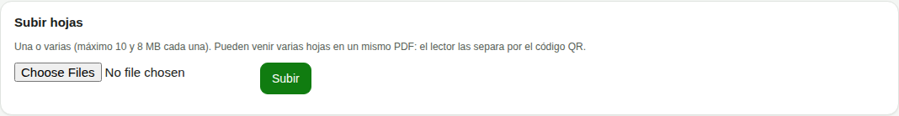
Las seis decisiones
Cada hoja leída trae una sugerencia del lector (por ejemplo "Lista para validar"). El lector sólo sugiere: decide RH.
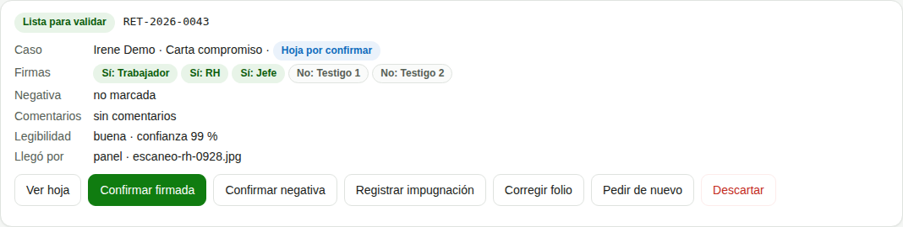
| Botón | Cuándo usarlo |
|---|---|
| Confirmar firmada | La hoja trae las firmas y corresponde al folio. |
| Confirmar negativa | La persona no firmó y firmaron los dos testigos. Pide los nombres de los testigos. |
| Registrar impugnación | La persona escribió que no está de acuerdo. |
| Corregir folio | La hoja quedó ligada a otro caso. Escribe el folio correcto completo (por ejemplo RET-2026-0041) y oprime Ligar a este folio. |
| Pedir de nuevo | Falta una firma, no se lee, o el folio o el nombre no coinciden. Escoge el motivo y la hoja se vuelve a recolectar. |
| Descartar | Es otra copia de una hoja ya confirmada, trae texto ajeno o no es una hoja de retardos. La nota es obligatoria. |
Antes de decidir, revisa la hoja con Ver hoja.
6. Cancelar o corregir un caso
Abre el caso, recuadro Qué sigue, oprime Cancelar caso. Escribe el Motivo de la cancelación (obligatorio, queda en la bitácora) y confirma con Sí, cancelar el caso.
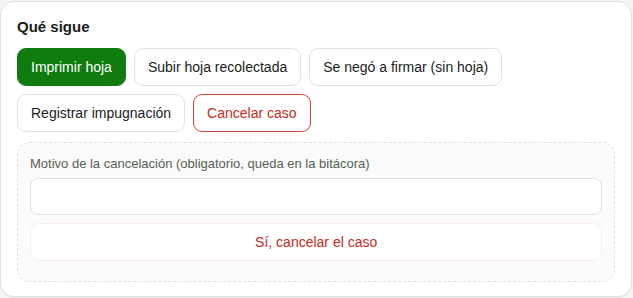
7. Corregir un caso de jornada
Pestaña Jornada semanal, recuadro Jornada por revisar. Ahí caen las semanas con datos incompletos: entrada sin salida, asistencias de más de 16 horas, incidencias abiertas o una semana sin asistencias. No sale ningún aviso hasta que RH decide.
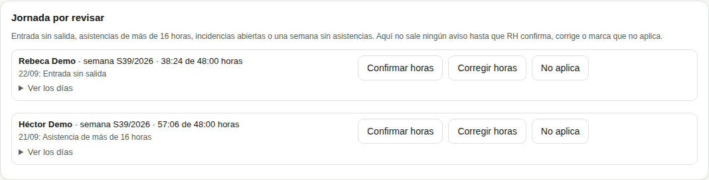
- Confirmar horas: las horas mostradas están bien.
- Corregir horas: las horas reales son otras. Se escriben las horas efectivas correctas en decimal (por ejemplo 47.5).
- No aplica: esa semana no debe medirse (por ejemplo, viaje o incapacidad).
Con Ver los días se abre el detalle de la semana.
8. Casos de personas de RH
Los casos de Ana los atiende Magaly; los de Magaly, ella misma. Llevan la marca caso de RH. Toda resolución deja copia a Dirección. Si otra persona intenta resolverlos, el panel responde que sólo lo resuelve quien tiene asignado.
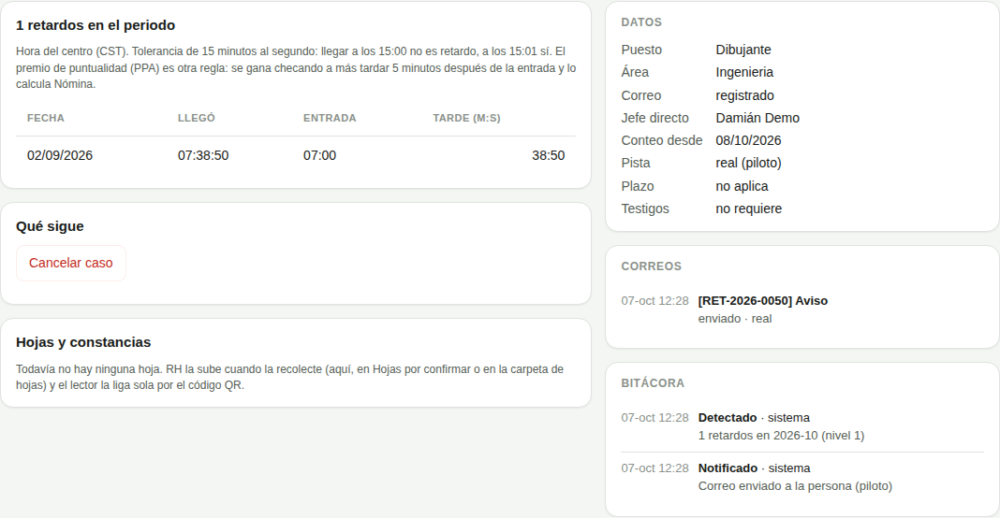
9. Veo casos marcados como sombra
Antes del arranque, el sistema corrió "en sombra" para probar las reglas con datos reales sin avisarle a nadie. Esos casos siguen visibles en el panel:
- Cómo reconocerlos. En la lista, los casos reales llevan la marca real · piloto (o real desde el lunes 12). Un caso sin esa marca es de sombra. Al abrirlo, en Datos, el renglón Pista dice sombra.
- No cuentan. No suman a retardos del mes, cartas, actas, reincidencia ni jornada. El conteo real empezó en cero: piloto el 08/10/2026 y resto el 12/10/2026.
- No generan correos a las personas. Sus correos se desvían a Dirección y RH con la etiqueta [SOMBRA]. No vencen, no escalan ni mandan recordatorios.
- Qué hacer. Nada. No hay que imprimir ni recolectar firmas de un caso de sombra. El lunes 12, al arrancar, Dirección los cancela todos juntos con el motivo "Inicio de go-live, la sombra fue ensayo".
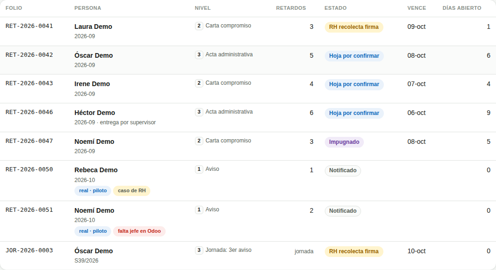
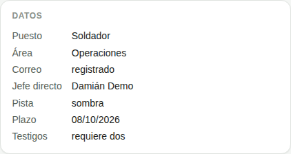
10. Falta jefe en Odoo
Si la persona no tiene jefe directo en Odoo, el caso lleva la marca falta jefe en Odoo y aparece en la cubeta Falta jefe en Odoo. El aviso salió con copia a Dirección. Lo que toca es asignarle su jefe en Odoo.
11. La cubeta "Suspensión alcanzada, no aplicada"
Junta los casos retenidos: los que alcanzaron un nivel que hoy no se aplica. Ya no se suspende a nadie (modo sin suspensión), y el acta administrativa está retenida hasta el arranque del lunes 12. Los retenidos de pista real (los marcados real o real · piloto) cuentan como antecedente. Los casos de sombra no cuentan como antecedente: son ensayo y el lunes 12 se cancelan. No hay que hacer nada con ellos.